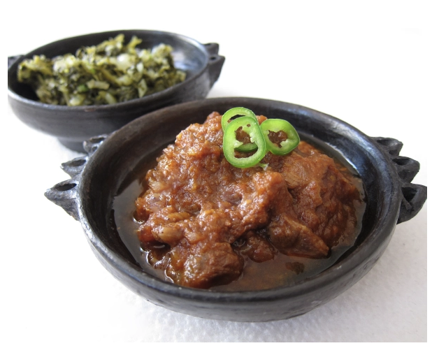

ገና (Gena)
Gena is also known as Ethiopian Christmas which is one of the most significant and widely celebrated holidays in Ethiopia. It falls on January 7th according to the Gregorian calendar which corresponds to the 29th of Tahsas in the Ethiopian calendar. Gena commemorates the birth of Jesus Christ and is marked by various religious and cultural traditions.
Outfits
For this traditional holiday of Ethiopia, most people wear traditional clothes of Ethiopia


Foods
During Gena, the festive atmosphere is complemented by a rich array of traditional foods that highlight Ethiopia's culinary heritage. The centerpiece of Gena's feast is often Doro Wat (chicken stew), a spicy chicken stew made with berbere (a blend of chili peppers, garlic, ginger, basil, and other spices) and niter kibbeh (spiced clarified butter). The stew is slow-cooked to perfection, allowing the flavors to meld together, and is typically served with Injera.
Another popular dish during Gena is Yebeg Wat(lamb stew) , a flavorful lamb stew also seasoned with berbere and other spices, offering a hearty alternative to Doro Wat.
